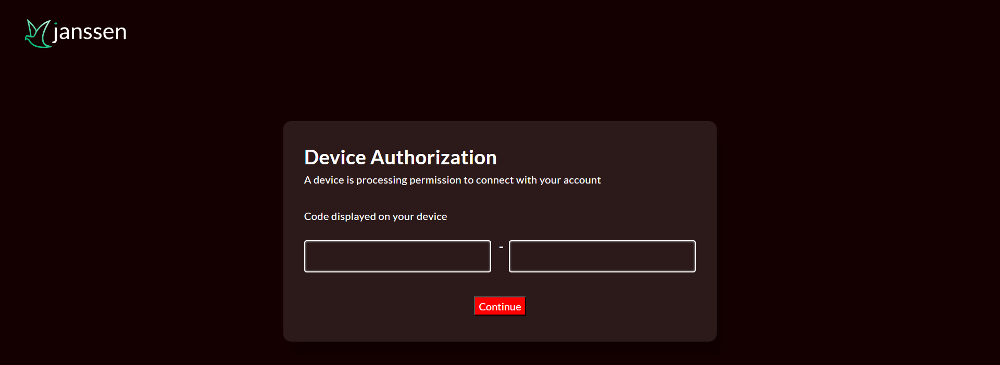
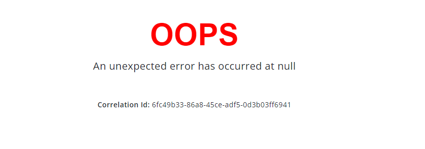

Customization#
Most organizations will want to edit and customize the look and feel of public-facing jans server pages to match their own corporate branding.
The following documentation provides the file locations of public facing pages, as well as instructions for adding custom HTML, CSS, and Javascript files to your jans server.
All web pages are xhtml files.
Default pages bundled in the jans-auth.war are:#
- Login page: login.xhtml
- Authorization page: authorize.xhtml
- Logout page: logout.xhtml
- Error page: error.xhtml
To override default pages listed above:#
Put a modified login.xhtml or authorize.xhtml or error.xhtml or logout.xhtml under /opt/jans/jetty/jans-auth/custom/pages/
Directory structure for customization#
/opt/jans/jetty/jans-auth/
|-- custom
| |-- i18n (resource bundles)
| |-- libs (library files used by custom script)
| |-- pages (web pages)
| |-- static (images and css files)
Adding a new web page for Person Authentication scripts#
- If
enterOTP.xhtmlis your webpage for step 2 of authentication, place it under/opt/jans/jetty/jans-auth/custom/pages/auth/enterOTP.xhtml - Reference it in the custom script as follows:
def getPageForStep(self, configurationAttributes, step): # Used to specify the page you want to return for a given step if (step == 1): return "/auth/login.xhtml" if (step == 2) return "/auth/enterOTP.xhtml"
Reference login pages#
Here you will find several login pages for different authentication methods.
Customized resource bundles#
-
Resource bundles that are present in the jans-auth.war are present in this folder
-
To override the defaults, custom
.propertiesfiles should be placed in the following file under this path :/opt/jans/jetty/jans-auth/custom/i18n/jans-auth.propertiesResource bundle names to support other languages should be placed under the same folder/opt/jans/jetty/jans-auth/custom/i18n/. Some examples of file names are :- jans-auth_en.properties
- jans-auth_bg.properties
- jans-auth_de.properties
- jans-auth_es.properties
- jans-auth_fr.properties
- jans-auth_it.properties
- jans-auth_ru.properties
- jans-auth_tr.properties
-
To add translation for a language that is not yet supported, create new properties file in resource folder and name it jans-auth_[language_code].properties, then add language code as supported-locale to the faces-config.xml present in the same folder.
Custom CSS files#
- Place the file in
/opt/jans/jetty/jans-auth/custom/static/stylesheet/theme.css - Reference it in .xhtml file using the URL
https://your.jans.server/jans-auth/ext/resources/stylesheet/theme.cssor/jans-auth/ext/resources/stylesheet/theme.css
Custom image files#
- All images should be placed under
/opt/jans/jetty/jans-auth/custom/static/img - Reference it in .xhtml file using the URL
https://your.jans.server/jans-auth/ext/resources/img/fileName.pngor/jans-auth/ext/resources/img/fileName.jpg
Page layout, header, footer (xhtml Template) customization#
Templates refers to the common interface layout and style. For example, a banner, logo in common header and copyright information in footer.
- All templates should be placed under
/opt/jans/jetty/jans-auth/custom/pages/WEB-INF/incl/layout/ - Place a modified
template.xhtmlin the above location which will override the default template file from the war
Custom Jar file for scripts#
for JARs less than 1MB#
-
Create a configmap with the custom jar file:
kubectl -n <namespace> create cm my-custom-jar --from-file=mycustom.jar -
Mount the configmap in your values.yaml under
auth-server.volumesandauth-server.volumeMountsauth-server: volumeMounts: - name: my-custom-jar-volume mountPath: /opt/jans/jetty/jans-auth/custom/libs/mycustom.jar subPath: mycustom.jar volumes: - name: my-custom-jar-volume configMap: name: my-custom-jar -
Run helm install or helm upgrade if Jans has been already installed.
helm upgrade <helm-release-name> janssen/janssen -n <namespace> -f values.yaml --version=1.0.x
For JARs greater than 1MB#
-
Create a configmap or secret for a shell script that contains instructions to pull the custom jar file:
#!/bin/sh # This script will pull the custom jar file from a remote location # and place it in the correct location for the Jans Auth server to use it wget -O /opt/jans/jetty/jans-auth/custom/libs/mycustom.jar https://mydomain.com/mycustom.jarkubectl -n <namespace> create cm my-custom-jar --from-file=mycustomjar.sh -
Mount the configmap or secret in your values.yaml under
auth-server.volumesandauth-server.volumeMountsauth-server: volumeMounts: - name: my-custom-jar-volume mountPath: /tmp/mycustomjar.sh subPath: mycustomjar.sh volumes: - name: my-custom-jar-volume configMap: name: my-custom-jar defaultMode: 0755 customScripts: - /tmp/mycustomjar.sh -
Run helm install or helm upgrade if Jans has been already installed.
helm upgrade <helm-release-name> janssen/janssen -n <namespace> -f values.yaml --version=1.0.x
Customized pages examples#
Custom Login page#
This guide will demonstrate how to customize the html and css of the default login page.
Here's a screenshot of the default login page.

As an example, we will add text to the top of the form and change the color of the button using the following steps:
-
Locate the directory that contains exploded auth-server WAR
kubectl exec -n <namespace> <auth-server-pod-name> -- ls /opt/jetty/tempOutput example:
jetty-0_0_0_0-8080-jans-auth_war-_jans-auth-any-15449359106458251753 -
Get the
login.xhtmlfrom the auth-server pod:kubectl -n jans cp <auth-server-pod-name>:opt/jetty/temp/jetty-0_0_0_0-8080-jans-auth_war-_jans-auth-any-15449359106458251753/webapp/login.xhtml login.xhtmlModify the file locally:
<h:form id="loginForm" class="bg-highlight position-relative d-flex flex-column align-items-center justify-content-center" style="height: 100vh; gap: 2rem" > <!-- customization --> <div class="row"><p id="creds-title">Enter Credentials</p></div> <!-- end of customization --> -
Get the
login-template.xhtmlfrom the auth-server pod:Modify the file locally:kubectl -n jans cp <auth-server-pod-name>:opt/jetty/temp/jetty-0_0_0_0-8080-jans-auth_war-_jans-auth-any-15449359106458251753/webapp/WEB-INF/incl/layout/login-template.xhtml login-template.xhtml<h:head> <link type="text/css" rel="stylesheet" href="https://fonts.googleapis.com/css?family=Open+Sans:300,400,600" /> <!-- customization --> <link rel="stylesheet" href="/jans-auth/ext/resources/stylesheet/custom.css" /> <!-- end of customization --> </h:head> -
Copy the following text and save it as
custom.css:#creds-title { font-style: italic; font-weight: bolder; color: white; font-size: 2em; } -
Create
configmapsto store the content oflogin.xhtml,login-template.xhtmlandcustom.css.kubectl -n <namespace> create cm auth-server-custom-html --from-file=login.xhtml kubectl -n <namespace> create cm auth-server-custom-layout-html --from-file=login-template.xhtml kubectl -n <namespace> create cm auth-server-custom-css --from-file=custom.css -
Mount the
configmapsin yourvalues.yamlunderauth-server.volumesandauth-server.volumeMounts:auth-server: volumeMounts: - name: auth-server-pages-volume mountPath: /opt/jans/jetty/jans-auth/custom/pages # login.xthml will be mounted under this directory - name: auth-server-layout-volume mountPath: /opt/jans/jetty/jans-auth/custom/pages/WEB-INF/incl/layout # login-template.xthml will be mounted under this directory - name: auth-server-static-volume mountPath: /tmp/static #custom.css will be mounted in the temporary location lifecycle: postStart: exec: command: [ "sh", "-c", "mkdir /opt/jans/jetty/jans-auth/custom/static/stylesheet/ && cp /tmp/static/custom.css /opt/jans/jetty/jans-auth/custom/static/stylesheet/"] # custom.css will be copied from the temporary to the desired location volumes: - name: auth-server-pages-volume configMap: name: auth-server-custom-html - name: auth-server-layout-volume configMap: name: auth-server-custom-layout-html - name: auth-server-static-volume configMap: name: auth-server-custom-css -
Run helm install or helm upgrade if Jans has been already installed.
helm upgrade <helm-release-name> janssen/janssen -n <namespace> -f values.yaml --version=1.0.x
Here's a screenshot of the customized login page.

Custom Device-code page#
This guide will demonstrate how to customize the html and css of the device-code page.
Here's a screenshot of the device-code page.

As an example, we will change the color of the button to blue using the following steps:
-
Locate the directory that contains exploded auth-server WAR
kubectl exec -n <namespace> <auth-server-pod-name> -- ls /opt/jetty/tempOutput example:
jetty-0_0_0_0-8080-jans-auth_war-_jans-auth-any-15449359106458251753 -
Get the
device_authorization.xhtmlfrom the auth-server pod:kubectl -n jans cp <auth-server-pod-name>:opt/jetty/temp/jetty-0_0_0_0-8080-jans-auth_war-_jans-auth-any-15449359106458251753/webapp/device_authorization.xhtml device_authorization.xhtmlModify the file locally:
<div class="device-authz-button"> <div style="width: 100%"> <!-- customization --> <div style="text-align: center;"> <h:commandButton id="continueButton" style="background-color: red; color: white;" value="#{msgs['device.authorization.confirm.button']}" iconAwesome="fa-sign-in"> <f:ajax execute="@form" render="@form messages" listener="#{deviceAuthorizationAction.processUserCodeVerification}" /> </h:commandButton> </div> <!-- end of customization --> -
Create a configmap to store the content of
device_authorization.xhtml.kubectl -n <namespace> create cm device-code-custom-html --from-file=device_authorization.xhtml -
Mount the
configmapin yourvalues.yamlunderauth-server.volumesandauth-server.volumeMounts:auth-server: volumeMounts: - name: device-code-pages-volume mountPath: /opt/jans/jetty/jans-auth/custom/pages # device_authorization.xthml will be mounted under this directory volumes: - name: device-code-pages-volume configMap: name: device-code-custom-html -
Run helm install or helm upgrade if Jans has been already installed.
helm upgrade <helm-release-name> janssen/janssen -n <namespace> -f values.yaml --version=1.0.x
Here's a screenshot of the customized device-code page.

Custom Error page#
This guide will demonstrate how to customize the html and css of the error page.
Here's a screenshot of the default Error page.

As an example, we will change the color of the text at the top of the error page:
-
Locate the directory that contains exploded auth-server WAR
kubectl exec -n <namespace> <auth-server-pod-name> -- ls /opt/jetty/tempOutput example:
jetty-0_0_0_0-8080-jans-auth_war-_jans-auth-any-15449359106458251753 -
Get the
error.xhtmlfrom the auth-server pod:kubectl -n jans cp <auth-server-pod-name>:opt/jetty/temp/jetty-0_0_0_0-8080-jans-auth_war-_jans-auth-any-15449359106458251753/webapp/error.xhtml error.xhtmlModify the file locally:
<div class="section"> <!-- customization --> <h1 style="color: red; font-size: 3em; font-weight: bold; font-family: Arial"> OOPS</h1> <!-- end of customization --> </div> -
Create a configmap to store the content of
error.xhtml.kubectl -n <namespace> create cm error-custom-html --from-file=error.xhtml -
Mount the
configmapin yourvalues.yamlunderauth-server.volumesandauth-server.volumeMounts:auth-server: volumeMounts: - name: error-pages-volume mountPath: /opt/jans/jetty/jans-auth/custom/pages # error.xthml will be mounted under this directory volumes: - name: error-pages-volume configMap: name: error-custom-html -
Run helm install or helm upgrade if Jans has been already installed.
helm upgrade <helm-release-name> janssen/janssen -n <namespace> -f values.yaml --version=1.0.x
Here's a screenshot of the customized error page.
